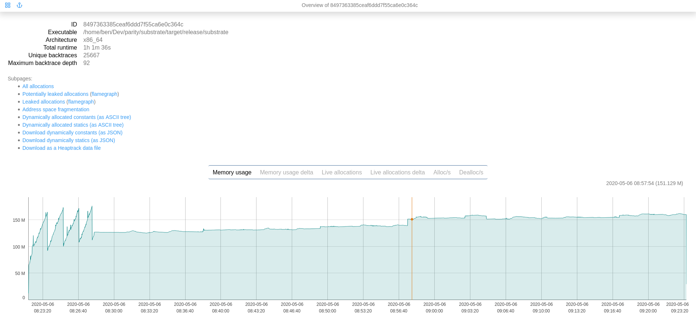

memory-profiler
memory profiler
Memory profiling enables you to understand the memory allocation and behavior of your blockchain applications over time in Substrate-based clients. It identifies method calls in the context of how memory was allocated, combining this information with the number of allocated objects. In addition, profiling can be used to analyze memory leaks, identify where memory consumption is happening, define temporary allocations, and investigate excessive memory fragmentation within applications.
The profiler we recommend is koute's memory profiler.
Installation
From a binary release
You can download a precompiled binary release of the profiler from here. The last version we've tested is 0.6.1, but any newer one will also most likely work.
Here's how you can download and unpack it from the command-line:
$ curl -L https://github.com/koute/memory-profiler/releases/download/0.6.1/memory-profiler-x86_64-unknown-linux-gnu.tgz -o memory-profiler-x86_64-unknown-linux-gnu.tgz
$ tar -xf memory-profiler-x86_64-unknown-linux-gnu.tgz
This will result in three files being unpacked. We're only interested in two of them:
libmemory_profiler.so- this is the memory profiler itself that we will hook into Substratememory-profiler-cli- this is the program we will later use to analyze the profiling data
From source
You can also compile the profiler from source yourself.
First you need to make sure to have the following installed:
- GCC toolchain
- Rust nightly (we've tested version
nightly-2021-06-08) - Yarn package manager (for building the GUI)
Then you should be able to build the profiler like this:
$ git clone https://github.com/koute/memory-profiler
$ cd memory-profiler
$ cargo build --release -p memory-profiler
$ cargo build --release -p memory-profiler-cli
You'll find the binaries we need in target/release/libmemory_profiler.so and target/release/memory-profiler-cli.
Hooking up the profiler to Substrate
This part heavily depends on how exactly you're launching Substrate.
Hooking to a manually launched Substrate
If you're manually launching Substrate from the command-line then hooking the profiler up to it boils down to just setting up a few extra environment variables and then launching it normally as you'd usually do.
First, we want to enable logging, tell the profiler where it's supposed to output its logs, where it should gather its profiling data, and optionally tell it to cull temporary allocations:
$ export MEMORY_PROFILER_LOG=info
$ export MEMORY_PROFILER_LOGFILE=profiling_%e_%t.log
$ export MEMORY_PROFILER_OUTPUT=profiling_%e_%t.dat
# Optional, depending on what exact aspect you'd like to profile
# and how long you're going to be profiling.
$ export MEMORY_PROFILER_CULL_TEMPORARY_ALLOCATIONS=1
Then we can launch Substrate with the profiler attached:
$ LD_PRELOAD=/path/to/libmemory_profiler.so ./target/release/substrate
Setting the LD_PRELOAD environment variable will instruct Linux's dynamic linker to inject the
memory profiler into Substrate just before it's launched, which allows the profiler to hook into the
system's memory allocation routines and track every memory allocation that Substrate's doing.
Hooking to Substrate launched through systemd
If you're running a Substrate-based node remotely you're probably using systemd to manage it.
Here's how you could go about setting up profiling in such a situation.
We assume you've already either downloaded a precompiled binary of the profiler or compiled it from source, and you have it in your current directory.
First, we want to copy the memory profiler to a globally accessible location and set up a place where it can write its logs and gather the profiling data.
$ sudo mkdir -p /opt/memory-profiler/bin
$ sudo cp libmemory_profiler.so /opt/memory-profiler/bin/
$ sudo mkdir /opt/memory-profiler/logs
$ sudo chmod 0777 /opt/memory-profiler/logs
Then we want to set up a file with all of the environment variables to configure the profiler itself:
$ echo "MEMORY_PROFILER_OUTPUT=/opt/memory-profiler/logs/profiling_%e_%t_%p.dat" | sudo tee /opt/memory-profiler/env
$ echo "MEMORY_PROFILER_LOGFILE=/opt/memory-profiler/logs/profiling_%e_%t_%p.txt" | sudo tee -a /opt/memory-profiler/env
$ echo "MEMORY_PROFILER_LOG=info" | sudo tee -a /opt/memory-profiler/env
$ echo "MEMORY_PROFILER_CULL_TEMPORARY_ALLOCATIONS=1" | sudo tee -a /opt/memory-profiler/env
$ echo "LD_PRELOAD=/opt/memory-profiler/bin/libmemory_profiler.so" | sudo tee -a /opt/memory-profiler/env
Now you want to open your systemd unit file for your node and add the following in the [Service] section:
[Service]
EnvironmentFile=/opt/memory-profiler/env
Do not add another [Service] section if one already exists; just add the EnvironmentFile key to it.
If you already have one EnvironmentFile key do not replace it; just add a second one, systemd will apply both.
Now you can reload your systemd daemon:
$ sudo systemctl daemon-reload
And then restart your service to start the profiling:
$ sudo systemctl restart kusama
The profiling data will be gathered at /opt/memory-profiler/logs. If you want to disable the
memory profiler just delete the EnvironmentFile key you've added to your unit file, and restart
the service again.
Configuring the profiler
There are also other environment variables you can set to configure the profiler, although besides the ones we've already shown changing them shouldn't be necessary in normal circumstances.
One configuration knob that warrants extra consideration is MEMORY_PROFILER_CULL_TEMPORARY_ALLOCATIONS,
which controls whenever the profiler will gather short lived allocations.
By default the profiler will gather every allocation that's made by the profiled application. That is a lot of data, and can be on the order of megabytes per second. This is great if you want to only profile for a short period of time, or if you specifically care about diagnosing temporary allocations, but it becomes problematic when you want to leave the profiler running for longer.
This is where the MEMORY_PROFILER_CULL_TEMPORARY_ALLOCATIONS option comes in. When you turn it on
by setting it to 1 the profiler will omit all of the really short lived allocations and not write
them out to disk. This significantly cuts down the amount of data that's generated, usually to the
range of kilobytes per second, which makes it possible to leave the profiling running for days at
a time.
Analysis
Now that you've gathered the profiling data you can now analyze it.
Assuming you have both the memory-profiler-cli and the .dat file you've gathered
in the same directory you can load the GUI for it:
$ ./memory-profiler-cli server *.dat
This might take a while, depending or your exact hardware and on the amount of data you're trying to load. Eventually you should see something like this being printed out:
[2020-05-06T08:59:20Z INFO cli_core::loader] Loaded data in 315s 820
[2020-05-06T08:59:20Z INFO actix_server::builder] Starting 8 workers
[2020-05-06T08:59:20Z INFO actix_server::builder] Starting server on 127.0.0.1:8080
Now you can open your web browser and access the GUI at http://localhost:8080/.

There's also a REST API that you can access you'd like to export the data into another format or inspect it programmatically.
Miscellaneous tips
-
It's a good idea to always check the logs generated by the profiler and see whenever there are any
WRNorERRlogs present. -
You might see the the following error or warning in the profiler's logs depending on which Linux distribution you're running:
The perf_event_open syscall failed for PID 0: Operation not permitted (os error 1)`
This is generally harmless; at most this should only result in higher CPU usage when profiling. You can avoid it by doing something like this:
bash
$ echo "-1" | sudo tee /proc/sys/kernel/perf_event_paranoid
Although please note that this might have some security implications. Take a look at
man perf_event_open for more details.
- During analysis the whole data file has to be loaded into memory. If you don't have enough RAM and you'll try to load up a big file the analyzer might run out of memory and crash.